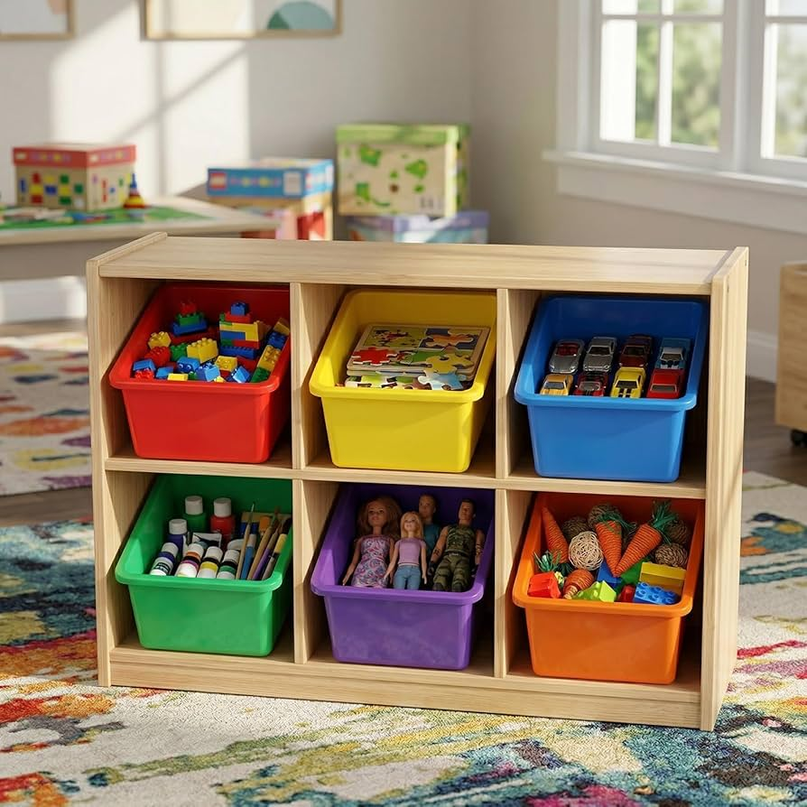
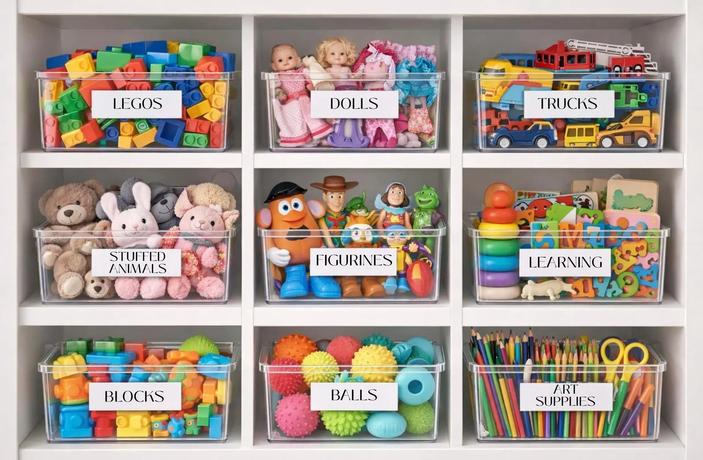

distance <- 26.2
typeof(distance)[1] "double"In the last class, you learned how to create simple objects (e.g., x <- 1221, name <- "jane"), but we never talked about the difference between a value like 1221 and "jane". These two values have different data types—one is a number and one is a character (really, a set of characters). These are two of what are called the “atomic” data types in R. Let’s dig into these data types more!
You’ve seen a lot of numbers in your day, so it probably wouldn’t surprise you to know that there are different types of numbers. There are numbers with decimals and there are numbers without decimals. Technically, R separates these two types of numbers into their own data types—doubles and integers.
If a number has a decimal value (e.g., 26.2), then R will store the number as a double (real) numeric.
distance <- 26.2
typeof(distance)[1] "double"Numbers that do not have decimals are called integers. If you want a number to be stored as an integer, you need to tell R to do so. Otherwise, your number will still be stored as a double.
Defaults to double:
room <- 1221
typeof(room)[1] "double"Adding an L to the end creates an integer:
room <- 1221L
typeof(room)[1] "integer"You might wonder why L is used to create an integer. Wouldn’t an I make more sense?
Because R is written mostly in C (another programming language), it likely inherits some naming conventions from C. In C, L is used to denote a (long) integer. Moreover, it would be confusing to use an I to indicate an integer since you use a "i" suffix to create a complex number.
integer
Adding an L at the end of a number is one way to make an integer, but this really only works when we are creating our objects by hand. More frequently, we will be given a vector of numbers which we may want to transform into integer values. The as.integer() function can help us do just that!
room <- 1410
room <- as.integer(room)
typeof(room)[1] "integer"A character value is somewhat the opposite of a number in that it contains qualitative information. In R, the character data type represents objects that can have any number of characters (e.g., "a", "ab", "abc"). A character data type can be identified by the use of quotation marks ("") surrounding the values.
first_name <- "lilly"
typeof(first_name)[1] "character"character
Converting between data types is something we will frequently find ourselves doing. Time related variables (e.g., year, month) are variables that are typically read in as numeric but we are often interested in using them as a character.
year <- 1988
as.character(year)[1] "1988"Notice the number now has quotations around it!
The last data type is one we haven’t seen before. Logicals have two possible values—TRUE and FALSE.
passed <- TRUE
typeof(passed)[1] "logical"Logical values have binary numerical representations.
A TRUE is represented by a 1.
as.numeric(TRUE)[1] 1A FALSE is represented by a 0.
as.numeric(FALSE)[1] 0So far, we’ve covered real (double), integer, character, and logical data types. These form all but two of the atomic data types. The only two that remain are complex and raw. As you might expect from its name, the complex data type is used to store complex numbers (e.g., 4 + 3i). The raw data type is possibly the least used data type, whose purpose is to store data at the byte level.
In STAT 1810 and 3820 we will only work with real, integer, character, and logical data types!
Now that we’ve learned about the different types of data values, let’s learn about the different ways data could be stored.
You encountered a vector in your last lab assignment! Vectors are created using the c() function (which stands for concatenate). Vectors have a few important qualities:
In the last lab, you added a character to a vector of numbers. Even though the objects had different data types, R didn’t output an error message. Indeed, it concatenated the objects together into one vector. But what data type was the resulting vector?
c(67, 13, 1989, "hello")[1] "67" "13" "1989" "hello"It made all the numbers into characters! This is called data type coercion, where R changes / coerces the data type of elements of the vector so they are all the same data type.
For each of the examples below, identify what data type do you believe the vector will have.
c(67, 13, 1989, TRUE)c("hello", "goodbye", TRUE)c("TRUE", FALSE, TRUE, "FALSE")When working with data, we will find ourselves with multiple vectors—one for each variable that was recorded. When assembling multiple vectors into an object the key question is whether the vectors all have the same data type or different data types.
Vectors that all have the same data type can be made into a matrix. A matrix has two dimensions—rows and columns. We can create a matrix of values from a vector by specifying the number of rows (nrow) or the number of columns (ncol).
names <- c("Jim", "Weun", "Pat", "Pran", "Phupha", "Tian")Specifying the number of rows (nrow):
matrix(names, nrow = 3) [,1] [,2]
[1,] "Jim" "Pran"
[2,] "Weun" "Phupha"
[3,] "Pat" "Tian" Specifying the number of columns (ncol):
matrix(names, ncol = 3) [,1] [,2] [,3]
[1,] "Jim" "Pat" "Phupha"
[2,] "Weun" "Pran" "Tian" The vector above has length 6, which is divisible by 3. What do you think will happen if the length of the vector isn’t divisible by the number of rows?
Warning in matrix(new_names, ncol = 3): data length [7] is not a sub-multiple
or multiple of the number of rows [3] [,1] [,2] [,3]
[1,] "Jim" "Pran" "Sean"
[2,] "Weun" "Phupha" "Jim"
[3,] "Pat" "Black" "Weun"First, R gives a warning message telling us that the length of the vector (7) is not a multiple of the number of rows we input (3). Then, it recycles the first value of the vector (Jim) to fill the spot where there wasn’t a value.
This can produce misleading data, so we should always make sure the length of our vector is a multiple of the dimension of the matrix (e.g., rows, columns) we are trying to make.
You might have noticed that the formatting of shows is a bit different from what we used before. Why is that?
One of the formatting guidelines for writing code is that your code should not be more than 80 characters long. This line of code is 82 characters long:
shows <- c("Tale of a Thousand Stars", "Bad Buddy", "Moonlight Chicken", "Not Me")Since it is longer than 80 characters, we need to break up the code. Meaning, we need to use a new line (return) somewhere in our code. There are few different ways we could have done this:
But, to us, these make it harder to see the length of the vector. So, that is why we chose to use a new line for every element of the vector.
shows <- c("Tale of a Thousand Stars",
"Bad Buddy",
"Moonlight Chicken",
"Not Me")What if we wanted to combine vectors that have different data types? Since a matrix requires all the entries to be the same data type, we will need to find a new solution!
A list is an object that allows entries to be different data types. Suppose for each show we have its release date. The name of the show is a character and the release date of the show is numeric. We can use a list to combine these two vectors into one object (top_bl).
[[1]]
[1] "Tale of a Thousand Stars" "Bad Buddy"
[3] "Moonlight Chicken" "Not Me"
[[2]]
[1] 2021 2021 2023 2022The output of a list is a bit unexpected, so let’s break it down. The [[]] represents the number of the component. So, [[1]] represents the shows and [[2]] represents the release_years. The [] represents the number of the item within each component. So, "Tale of a Thousand Stars" is the first ([1]) item of the first component ([[1]]).
We find it easier to think of lists as cubby bins. Each [[]] represents a bin and the [] represent the items in the bin. Within a bin the objects are the same data type, but each bin can have different types of objects.

list analogy with a cubby bin. Each cubby has different types of items (e.g., puzzles, dolls, legos) but within a cubby the items are all the same.We could have modified our method for creating the list by giving each component a name.
top_bl <- list(show_name = shows, release_year = release_years)
top_bl$show_name
[1] "Tale of a Thousand Stars" "Bad Buddy"
[3] "Moonlight Chicken" "Not Me"
$release_year
[1] 2021 2021 2023 2022Notice now there are $ symbols instead of [[]] symbols. The $ in front of show_name and release_year represents the name of that component. We technically call this a named list since every component has a name.

list analogy with a cubby bin. Similar to before, each cubby has different types of items (e.g., puzzles, dolls, legos) but within a cubby the items are all the same. However, now the cubbies all have names identifying the contents of the cubby.Technically, a list can have both entries with different data types and entries with different lengths. Both show_name and release_year have 4 items. However, there is more than one character in each show. We can add these characters to a list in the same way as before:
$show_name
[1] "Tale of a Thousand Stars" "Bad Buddy"
[3] "Moonlight Chicken" "Not Me"
$release_year
[1] 2021 2021 2023 2022
$characters
[1] "Jim" "Weun" "Pat" "Pran" "Phupha" "Black" "Sean" The list has no problem having entries with different lengths! But, if your entries all happen to have the same length, then you can use a special type of list—a dataframe.
data.frame(show_name = shows,
release_year = release_years) show_name release_year
1 Tale of a Thousand Stars 2021
2 Bad Buddy 2021
3 Moonlight Chicken 2023
4 Not Me 2022While a dataframe is a list, the output looks very different. Each variable (show_name, release_year) is slotted into a column. The numbers on the side (1, 2, 3, 4) represent the element number.
Using the output below, identify what type of object you believe was created.
[[1]]
[1] "Malus domestica" "Citrus sinensis" "Citrus limon"
[4] "Citrus aurantifolia" "Mangifera indica" "Prunus persica"
[[2]]
[1] 3 5 12 12 5 3 [,1] [,2]
[1,] 3 12
[2,] 5 5
[3,] 12 3 fruits trees
1 apple Malus domestica
2 orange Citrus sinensis
3 lemon Citrus limon
4 lime Citrus aurantifolia
5 mango Mangifera indica
6 peach Prunus persica$tree
[1] "Malus domestica" "Citrus sinensis" "Citrus limon"
[4] "Citrus aurantifolia" "Mangifera indica" "Prunus persica"
$harvest_window
[1] 3 5 12 12 5 3[1] "Malus domestica" "Citrus sinensis" "Citrus limon"
[4] "Citrus aurantifolia" "Mangifera indica" "Prunus persica" We will often find ourselves in the position where we are interested in extracting a component / components of an object. Extracting components from an object is more frequently called “subsetting,” where the subset is a smaller part of the larger object. Fundamentally, subsetting is done using indexing where the index / indices refer to elements you wish to be kept (or discarded) from the larger object.
Let’s see how subsetting works on each of the objects we learned about previously.
We extract components of a vector using bracketing ([]). The value(s) inside the brackets indicate what indices should be kept. There are two methods for indexing what values should be kept—numbers and logical values.
Every element of a vector is assigned a number representing its position (location) in the vector. R starts counting at 11. So, a vector with have indices starting at 1 and ending at its last element.
The vector of shows below has 4 elements, so it will have indices from 1 up to 4.
shows <- c("Tale of a Thousand Stars",
"Bad Buddy",
"Moonlight Chicken",
"Not Me")If we wanted to extract a single element of shows we would write something like shows[3], which would output "Moonlight Chicken".
Once we want to extract more than one element of shows, then we need to make a vector containing the indices we want to keep. Remember, we create a vector using the c() function.
So, if we wanted the first two elements of shows, we could write something like:
shows[c(1, 2)][1] "Tale of a Thousand Stars" "Bad Buddy" If we wanted the second and forth elements, we could write something like:
shows[c(2, 4)][1] "Bad Buddy" "Not Me" If you want to create a vector of consecutive numbers (e.g., 1 through 5), you don’t have to type out c(1, 2, 3, 4, 5). There is a shortcut!
The : operator can generate a sequences of numbers. For example, 1:5 would generate a sequence of numbers from 1 to 5 (1, 2, 3, 4, 5). So, if you wanted the first three elements of shows you could instead write shows[1:3].
Much faster!
The second method of subsetting uses logical values (TRUE, FALSE) instead of numbers to grab the desired indices. Each logical value represents whether that specific index / element should be retained.
shows[c(FALSE, TRUE, FALSE, TRUE)][1] "Bad Buddy" "Not Me" Notice this vector is longer than the previous method (shows[c(2, 4)])! The vector of logicals must be the same length as the original vector, since each logical value refers to whether that specific element of the vector should be kept!
Given this vector, write code to perform the following operations. Can you find multiple methods?
fruits <- c("apple",
"orange",
"lemon",
"lime",
"mango",
"peach")
fruits[1] "apple" "orange" "lemon" "lime" "mango" "peach" Grab the first three elements.
Grab the first, third, and fifth element.
Where a vector had one dimension (length) a matrix has two dimensions—rows and columns. Because we now have a second dimension, there are two elements in the brackets ([]) we use to index.
name_matrix <- matrix(names, nrow = 2)
name_matrix [,1] [,2] [,3]
[1,] "Jim" "Pat" "Phupha"
[2,] "Weun" "Pran" "Tian" Now when we bracket, we will use something like [2, 2]. The first number refers to the row and the second number refers to the column. So, [2, 2] extracts the observation from the second row and second column:
name_matrix[2, 2][1] "Pran"If we wanted to grab an entire row we would leave the second value out, thereby grabbing every column:
name_matrix[2,][1] "Weun" "Pran" "Tian"If we wanted to grab an entire column we would leave the first value out, thereby grabbing every row:
name_matrix[,2][1] "Pat" "Pran"Grabbing multiple rows / columns works the same way as a what we did with a vector, where we need to create a vector of rows / columns we want to keep.
## Rows 1 & 2, Column 2
name_matrix[1:2 , 2][1] "Pat" "Pran"## Row 2, Columns 2 & 3
name_matrix[2, 2:3][1] "Pran" "Tian"Notice that all of the above actions for subsetting a matrix resulted in a vector. That is because each of these actions isolated a single row or a single column. So, the resulting object only had one dimension (not two).
We could have gotten a matrix, but we would have needed to isolate multiple rows or multiple columns:
## All Rows, Columns 2 & 3
name_matrix[, 2:3] [,1] [,2]
[1,] "Pat" "Phupha"
[2,] "Pran" "Tian" Given this matrix, write code to perform the following operations. Can you find multiple methods?
[,1] [,2]
[1,] "Malus domestica" "Citrus aurantifolia"
[2,] "Citrus sinensis" "Mangifera indica"
[3,] "Citrus limon" "Prunus persica" Grab the tree in the second row, second column.
Grab the trees in the first two rows.
Grab the trees in the second column.
Lists differ from matrices and vectors in one key way, the use of [[]] to isolate a component. Where a matrix used [3, ] to isolate the third row, a list uses [[3]] to isolate the third component.
Recall the list we made earlier:
top_bl <- list(show_name = shows,
release_year = release_years,
characters = characters)
top_bl$show_name
[1] "Tale of a Thousand Stars" "Bad Buddy"
[3] "Moonlight Chicken" "Not Me"
$release_year
[1] 2021 2021 2023 2022
$characters
[1] "Jim" "Weun" "Pat" "Pran" "Phupha" "Black" "Sean" If we wanted to isolate the characters, we could use [[3]] to grab that component of the list:
top_bl[[2]][1] 2021 2021 2023 2022Alternatively, we could have used a $ to isolate this component because it has a name:
top_bl$release_year[1] 2021 2021 2023 2022Notice that each of these are once again a vector! If we wanted to grab an element from either of these vectors, we can use the method we learned previously (bracketing).
top_bl[[2]][3][1] 2023You could probably see how this might get confusing! The [[]] and the [] next to each other makes this code a bit difficult to understand. You can, however, read code like a book—going from left to right. Starting on the left, we know the top_bl[[3]] grabs the third component from the list top_bl. We’ve also learned that this element is a vector. So, when we see the [3] we know that this is extracting the third element of the vector.
This might take a bit of practice, but you’ll get there!
Given this list, write code to perform the following operations. Can you find multiple methods?
$fruit
[1] "apple" "orange" "lemon" "lime" "mango" "peach"
$tree
[1] "Malus domestica" "Citrus sinensis" "Citrus limon"
[4] "Citrus aurantifolia" "Mangifera indica" "Prunus persica"
$harvest_window
[1] 3 5 12 12 5 3Grab the first component (fruit).
Grab the third tree from the tree component.
Recall that a dataframe is a special type of list, where every component has the same length. So, the methods we learned for extracting components from a list will also work here.
shows_releases <- data.frame(show_name = shows,
release_year = release_years)
shows_releases show_name release_year
1 Tale of a Thousand Stars 2021
2 Bad Buddy 2021
3 Moonlight Chicken 2023
4 Not Me 2022To grab a column from a dataframe you can use [[]] or you can use a $. We prefer using a $, since the components (columns) of a dataframe are required to have names.
shows_releases$show_name[1] "Tale of a Thousand Stars" "Bad Buddy"
[3] "Moonlight Chicken" "Not Me" shows_releases[["show_name"]][1] "Tale of a Thousand Stars" "Bad Buddy"
[3] "Moonlight Chicken" "Not Me" Interestingly, since a dataframe is made up of vectors with the same length, you can also extract components using the notation we learned for matrices.
Grab the First Row
shows_releases[1, ] show_name release_year
1 Tale of a Thousand Stars 2021Grab the Second Column
shows_releases[, 2][1] 2021 2021 2023 2022Given this dataframe, write code to perform the following operations. Can you find multiple methods?
fruit_trees <- data.frame(fruits, trees, harvest_window)
fruit_trees fruits trees harvest_window
1 apple Malus domestica 3
2 orange Citrus sinensis 5
3 lemon Citrus limon 12
4 lime Citrus aurantifolia 12
5 mango Mangifera indica 5
6 peach Prunus persica 3Grab the second column (trees).
Grab the third and forth columns (trees, harvest_window).
Grab the second row of all three columns.
Now that we know how to extract elements from each of these objects, let’s learn how to perform mathematical operations!
Suppose we have a matrix of numerical values:
[,1] [,2] [,3] [,4]
[1,] 47 46 7 24
[2,] 13 47 0 13
[3,] 49 4 44 1We could multiply every value of nums_matrix by -1 with this simple code:
nums_matrix * -1 [,1] [,2] [,3] [,4]
[1,] -47 -46 -7 -24
[2,] -13 -47 0 -13
[3,] -49 -4 -44 -1Notice how we didn’t need to give R specific instructions to multiply each specific value of nums_matrix by -1? That is the magic of vectorized operations—actions that can be done to an entire vector (or matrix)!
Similar to mathematical operations, there are functions that also operate on vectors of values. Take the square root function (sqrt()):
sqrt(nums_matrix) [,1] [,2] [,3] [,4]
[1,] 6.855655 6.782330 2.645751 4.898979
[2,] 3.605551 6.855655 0.000000 3.605551
[3,] 7.000000 2.000000 6.633250 1.000000It is possible that we might want to perform an operation on a row (or column) of values and save the updated values back into the original row (or column). To do this, we have three steps we need to follow:
Let’s see how this might look in the context of nums_matrix. Suppose we want to subtract 30 from all numbers in the first and second rows of the third column. The first two steps are fairly simple, we extract the first and second rows with nums_matrix[1:2, 3], and we can do subtraction easily with just a - 30.
nums_matrix[1:2, 3] - 30[1] -23 -30The saving back into the original position is the tricky part! We need to assign (<-) the values we changed back into their original position (nums_matrix[1:2, 3]). So, our code should look like this:
nums_matrix[1:2, 3] <- nums_matrix[1:2, 3] - 30
nums_matrix [,1] [,2] [,3] [,4]
[1,] 47 46 -23 24
[2,] 13 47 -30 13
[3,] 49 4 44 1We touched on how we can use logical values to isolate specific components of an object. Previously, we created these vectors of logical values ourselves (e.g., c(FALSE, TRUE, FALSE, TRUE)), but this is rarely done in practice. Instead, we typically acquire a vector of logical values using a relational statement, a statement which asks how the values of an object relate to a specific value (e.g., 40).
Let’s explore these ideas with a vector of values. We can transform our nums_matrix into a vector using the c() function:
nums_vector <- c(nums_matrix)
nums_vector [1] 47 13 49 46 47 4 -23 -30 44 24 13 1Suppose I wanted to know what indices of nums_vector were equal to 13. I could write this as a relational statement: nums_vector == 13. The output of this statement is a vector of logical values indicating whether the value of a particular index satisfied the condition being checked (== 13):
nums_vector == 13 [1] FALSE TRUE FALSE FALSE FALSE FALSE FALSE FALSE FALSE FALSE TRUE FALSE= signs?
Notice that checking equality requires two = signs (==). This is because a single = sign assigns a value into an object (similar to <-).
Because logical values have equivalent numerical values (TRUE = 1, FALSE = 0), we can perform mathematical operations with these vectors! If I wanted to know how many values in nums_vector were equal to (== 13), then I could sum the resulting vector of logicals:
sum(nums_vector == 13)[1] 2The output here is 2, which agrees with what we saw before. There were 2 values of TRUE and 10 values of FALSE, which added together gives you a sum of 2.
We can also use the sums we calculated from these logical values to calculate proportions. Recall that a proportion is the number of instances of an event (e.g., == 13) out of the total number of possible instances. The total possible instances is the number of indices in the vector, or the length() of the vector!
Let’s find the proportion of numbers in nums_vector that are greater than or equal to 40.
The most commonly used relational statements you will encounter are as follows:
== means “equal to”!= means “not equal to”> or < means “greater than” or “less than” (note the strict equality)>= or <= means “greater than or equal to” or “less than or equal to”Other languages, like Python, start counting at 0.↩︎